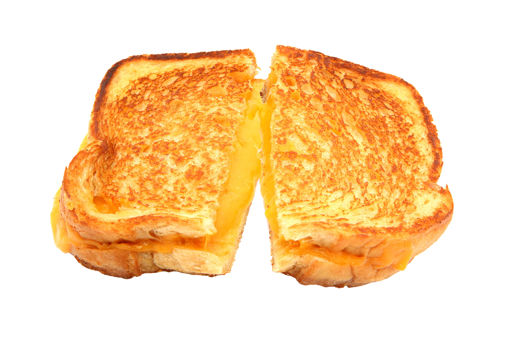

Grilled Cheese

This simple recipe will leave you wanting more!
Ingredients:
- 2 slices of any bread
- 2 tablespoons of butter
- 1/8 cup of shredded mozzarella
- 1/8 cup of shredded cheddar
Instructions:
- Warm up a pan at medium heat. Once warm, melt butter
- Place slice of bread in pan to let it lightly toast
- Set aside 1 tbsp of shredded cheese. After 30 seconds of the bread toasting, place shredded cheese on the slice of bread. Immediately place the second slice on top/li>
- About 1 minute later, get ready to flip your grilled cheese.
Prior to that, place the remanining shredded cheese directly in the pan letting it melt.
Flip the grilled cheese onto the melted cheese. This will caramelize and develop an amazing crust!
- Keep periodicially flipping the grilled cheese until desired doneness.
If needed, cover with a lid and add a tsp of water to help the cheese melt further.
Additional cheese can also be added to the sides as desired!
- Remove from pan when cooked, and serve immediately.